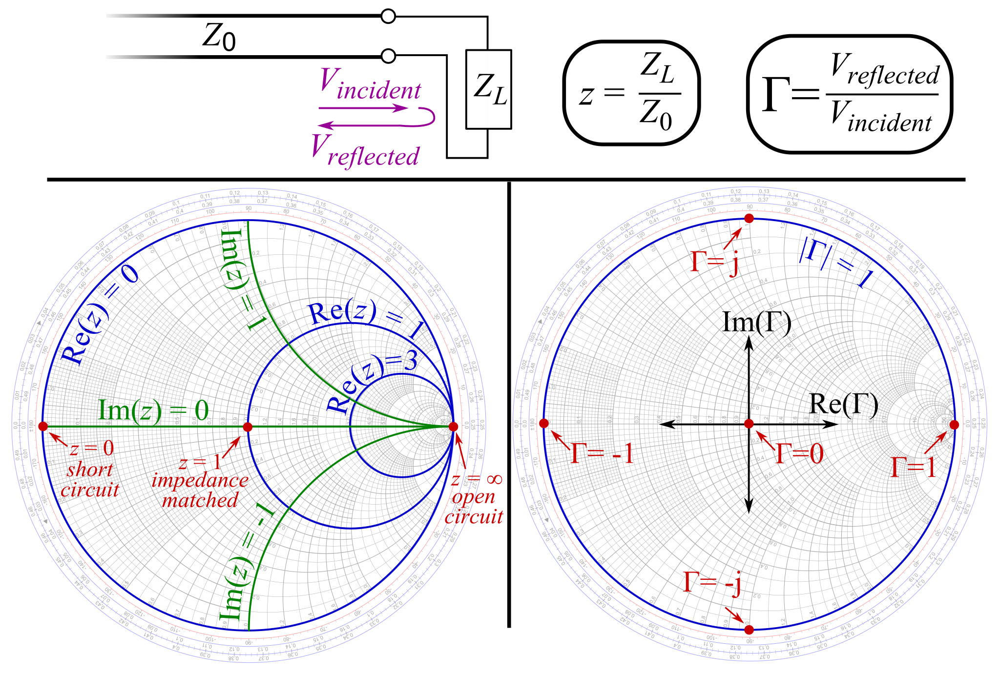

微波电路与系统¶
\[
\def\R{\mathbb{R}}
\]
无源器件和半导体器件¶
Smith 圆图上的变换¶
2023年3月8日。
\(z = \frac{Z_\text{in}}{Z_c}\)，\(\Gamma = \frac{z-1}{z+1}\)。（一种 Möbius 变换)
| 情况 | \(z\) | \(\Gamma\) |
|---|---|---|
| 短路 | \(0\) | \(-1\) |
| 开路 | \(\infty\) | \(1\) |
| 匹配 | \(1\) | \(0\) |
| 纯驻波 | \(j\times\R\) | \(e^{j\times[0,2\pi)}\) |

{kind=link}
| 变换 | \(\Gamma\) 的效果 | 解释 |
|---|---|---|
| 沿传输线移动 \(l\) （\(+l\) 为“源→负载”方向） |
绕 \(\Gamma = 0\) 旋转 \(2\beta l\) | 入射、反射波分别转动 \(\pm\beta l\)。 |
| 串联纯电抗 | 沿内切于 \(\Gamma=1\) 的圆转动 | \(z\) 变化纯虚数 |
| 串联纯电阻 | 沿正交于 \(\Gamma=1\) 的圆转动 | \(z\) 变化实数 |
| 并联纯电抗 | 沿内切于 \(\Gamma=-1\) 的圆转动 | \(z^{-1}\) 变化纯虚数 |
| 并联纯电阻 | 沿正交于 \(\Gamma=-1\) 的圆转动 | \(z^{-1}\) 变化实数 |
Möbius 变换的复合
\(z \leftrightarrow \Gamma\)，则 \(z^{-1} \leftrightarrow -\Gamma\)。
\[
\frac{z^{-1}-1}{z^{-1}+1}
= \frac{1-z}{1+z}
= - \frac{z-1}{z+1}.
\]
用微带线实现集总电容、电感¶
2023年3月7–8日。
对于宽 \(W\)、厚 \(d\) 的平板传输线，（传播方向）单位长度的电容、电感
\[
L_0 = \mu \frac{d}{W},\quad
C_0 = \varepsilon \frac{W}{d}.
\]
平板传输线理想模型
电磁场方向、传播方向相互垂直。电磁场局限在平板之间的长方体中，并且均匀分布。
此时 \(E d = U\)（电势定义），\(H W = I\)（安培环路定律）。
从而特性阻抗
\[
Z_c = \sqrt{\frac{L_0}{C_0}}
= \sqrt{\frac{\mu}{\varepsilon}} \frac{d}{W},
\]
以及传播速率
\[
\frac{\omega}{\beta} = \frac{1}{\sqrt{L_0 C_0}} = \frac{1}{\sqrt{\mu\varepsilon}} = c.
\]
微带¶
由物理参数，可得以下近似。
| \(W/d\) | \(Z_c\) | 短线双端口特性 |
|---|---|---|
| \(0^+\) | \(+\infty\) | 仅有串联电感 |
| \(+\infty\) | \(0^+\) | 仅有并联电容 |
短线
以上“短线”是指传播方向上的长度小于 \(\frac18 \lambda\)。
也可从转移参数（输出电压电流 ↦ 输入电压电流）理解。
取 \(+z\) 为“源→负载”方向，\(\theta = \beta z\)，则微带线的转移参数为
\[
\begin{bmatrix}
\cos\theta & j \sin\theta Z_c \\
j \sin\theta / Z_c & \cos\theta \\
\end{bmatrix}.
\]
观察
- 行列式为一 ⇔ 倒易（reciprocal）。
- 主对角线上两数相等 ⇔ 对称。（取逆再统一正方向后不变）
- 主对角线纯实，反对角线纯虚 ⇐ 倒易 ∧ 无耗。
- 特征值为 \(\exp(\pm j\theta)\)，特征向量分别是 \(U = \pm I Z_c\)。
对比串联电感、并联电容的转移参数
\[
\begin{bmatrix}
1 & j\omega L \\
& 1 \\
\end{bmatrix},
\quad
\begin{bmatrix}
1 \\
j\omega C & 1 \\
\end{bmatrix},
\]
即得 \(\theta \approx 0\)，\(Z_c \to +\infty\)、\(Z_c \to 0^+\) 下的近似。
微带支线¶
除了用作双端口器件，还可用作支线（支线一端短路或开路，另一端接入电路），这相当于与负载并联一段传输线。（传输线的输入阻抗可由 Smith 圆图判断）